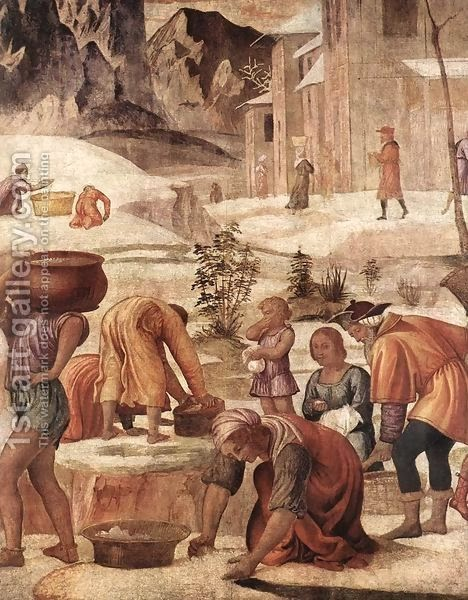

Yoma 75 - The affliction of manna
In discussing food afflictions of Yom Kippur, the Talmud turns to manna, since it, too, is called an affliction: " Who feeds you manna in the Wilderness… in order to afflict you ." - Some say, it is because they never knew what they will eat tomorrow, should manna not fall the next day. Others - that since manna could take on any taste but always looked the same, they were never satisfied with it. Rav Yosef (who was blind) demonstrates from here that a blind person eats but is never fully satisfied.
More parallel disagreements: what does this phrase mean, "Worry in one’s heart? - Quash it!" Some say that it sound like "remove from your mind" - by the study of the Torah. Others - to tell it to others. But how does this help? - Since others will suffer to hear about your troubles, and they don’t deserve it, God will remove it from you to spare them this unwarranted suffering.
More facts about the manna are drawn from the words describing it. For example, it was "like bread, oil, and honey." How can it be? To young it felt like bread, to old - like oil, and to children - like honey, each according to the age preference.
Art: The Gathering of the Manna By Bernardino Luini